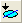

FAQ-254 ある1つの関数の複数のインスタンスを使って1つのデータセットをフィットするには?
Single-Data-Multiple-Fit
最終更新日:2015/02/04
以下の手順に従ってください:
- ワークシートをアクティブにして、Ctrlキーを押しながら、同じ列内の2つ以上のデータ範囲を選択します。グラフをアクティブにして、領域データセレクタツールを使って、2つ以上の範囲を選択します。
- 範囲を設定したらNLFitダイアログを開きます。解析：フィット：非線形曲線フィット。
- 設定タブ内の「関数選択」で関数を選びます。
- 設定タブの「データ選択」を「複数データフィットモード」の「グローバルフィット」にセットします。
- 「パラメータ」タブで、パラメータを共有したり、「コード」タブの制約で、線形制約条件にチェックを付けて、必要に応じて制約を入力します。例えば、各ピークの幅が同じであるようなガウスでフィットする場合、パラメータwに対して共有のチェックボックスを選択します。1つのボルツマンが別のボルツマンの上に乗っているようなボルツマンでフィットするとき、下側のボルツマンの上側の漸近線 (A2) は、上側のボルツマンの下側の漸近線 (A1) と一致し、制約条件としてA1_2 = A2を入力します。
キーワード: 複製, ピーク, 繰り返し